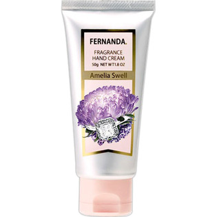

返回列表
产品名称：フェルナンダ フレグランスハンドクリーム アメリアスウェル

ＦＥＲＮＡＮＤＡ ＪＡＰＡＮ フェルナンダ フレグランスハンドクリーム アメリアスウェル ５０Ｇ
メーカー ＦＥＲＮＡＮＤＡ ＪＡＰＡＮ
JANコード 4571395824039
商品の特徴
練り香水の様にやさしく香るハンドクリーム。
- 成分・分量
- 水,ステアリン酸,ミネラルオイル,グリセリン,シア脂,セタノール,ジメチコン,(アクリル酸ヒドロキシエチル/アクリロイルジメチルタウリンNa)コポリマー,香料,加水分解コラーゲン,ヒアルロン酸Na,スクワラン,ローズヒップ油,オリーブ油,ホホバ種子油,マカデミアナッツ油,アロエベラ葉エキス,BG,ブチルカルバミン酸ヨウ化プロピニル,ステアリン酸グリセリル(SE),プロパンジオール
- 用法及び用量
- 適量をを手によく馴染ませてください。練り香水としてお使いになる場合は、パール1個分を、耳たぶの後ろや首筋、デコルテ部分に塗ってください。優しい香りがふわふわと持続します。